TRASH WORLD NEWS
Issue 1, October 1997
TRASH WORLD NEWS
Page cover
ISSUE #1 — OCTOBER 1997
THE UNDERGROUND COMPUTER MAGAZINE
THE EXA ISSUE
- TRASH WORLD MANIFESTO
- EXA PROGRAMMING TUTORIALS
- DEBUGGING THE PHAGE
- NETWORK EXPLORATION
- ...AND MORE
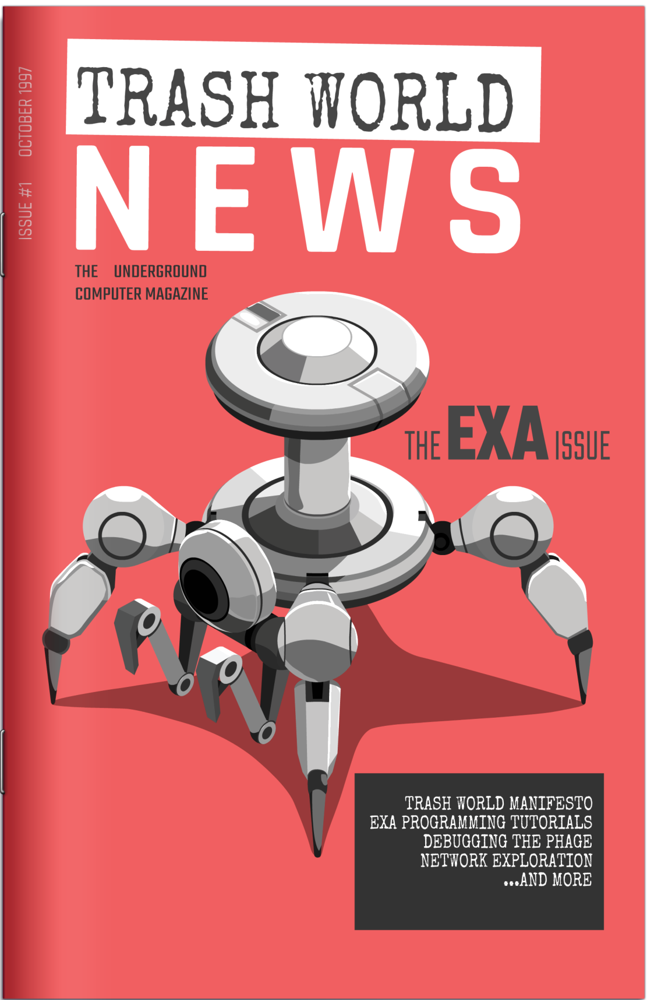
Brought to You By...
Page inside-cover
- Editor-In-Chief
- Ghast
- Contributing Editors
- Sea Scout
- Selenium Wolf
- Shout-Outs
- EXAPUNKS channel
- Graphic Design
- JHAKRI
- Writers
- Fluoxetine Dream
- Island Mikey
- D. Krasnova
- The Deacon
- Green Man
- Loveless
Information presented in TRASH WORLD NEWS is for EDUCATIONAL PURPOSES ONLY. TRASH WORLD NEWS does not condone illegal activity.
TWN — OCTOBER 1997
Table of Contents
Page 1
Manifesto
Getting Started
- 05 — Distributed Network Programming with EXAs
- 08 — Ghast Walks U Thru It (Tutorials)
- 12 — Hacker Skills: Runtime Errors and How to Exploit Them
- 14 — Axiom EXA Language Reference Guide
Hackerverse
- 18 — Debugging the Phage
- 22 — Hardware Hacks: Electronic Highway Signs
- 24 — Network Exploration: Digicash Point-of-Sale Systems
- 26 — Accessing Data in Legacy Storage Systems
- 28 — Network Exploration: Workhouse
- 30 — Network Exploration: Equity First Bank
Munchies
Trash World Manifesto
Page 2
Welcome to the inaugural issue of TRASH WORLD NEWS. You might be wondering why we're launching a new 'zine at a time when everything is going digital. The answer is simple: We need a place to share vital and sensitive information about computer systems and networks— a place that doesn't depend on computers itself.
Have you noticed it lately? Everywhere you go, whatever you do, there's a bank of computers at work behind the scenes making decisions about you. Society at large seems to accept it as a norm that computer programs designed by the powers that be will determine our value to them and treat us accordingly.
We need a place to share vital and sensitive information about computer systems and networks...
Computers by themselves are just tools that do what they're programmed to do. That's why it's up to us to take up the fight. We need to equip ourselves with tools and knowledge so we can push back against this rising tide— so that every time some big system treats us like we're just a bunch of punch cards for them to process, we can write programs to throw wrenches in the gears of those grand designs, to force them to acknowledge us as the people we are.
Page 3
We're human beings. And we're hackers.
Letter from the Editor
This issue is all about the small but mighty EXA, the technology that took over the world without anyone noticing. These little things are behind almost everything now, from handheld game consoles to huge corporate servers.
We'll take you through the ins and outs of those, and hopefully you'll be up and running fast, even if you've never programmed a computer before.
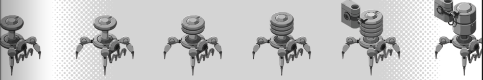
We also have a ton of potentially useful field reports from hackers around the world on topics like data storage formats, noteworthy computer networks, and more.
Finally, there's a real interesting look at the disease known as "the phage" from a research biologist who studied it on her own time and kindly shared her notes with us. I guarantee you won't get this information anywhere else.
The hacker spirit lives on. Ghast out.
Hypercomputers
Page 4
Japan's Hottest Personal Computers Direct to You!
- MITSUZEN RAVEN (S-VER)
- TEC SOCRATES REASON
- SAWAYAMA Z8 HYPERLANCE
Call for Pricing
47-0-1725-2200
HYPERCOMPUTERS
EXPERIENCE究極パフォーマンス
![Three personal computers drawn in isometric style on a black background, each sitting on a diagonal stripe labelled with its maker and model. Top, MITSUZEN RAVEN (S-VER), a compact portable computer with a flip-up screen and built-in keyboard. Middle, TEC SOCRATES REASON, a keyboard computer with three round sockets and a cartridge slot, its case labelled "SOCRATES REASON" and "TEC". Bottom, SAWAYAMA Z8 HYPERLANCE, a large angular console-keyboard with a round disc drive on top and "Z8 HYPERLANCE" printed on its case.](images/twn-1-fig04.png)
Distributed Network Programming with EXAs
Page 5
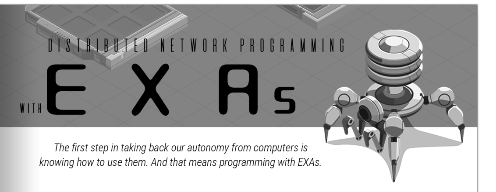
What Are EXAs?
EXA is short for EXecution Agent. It's a small program that can move from one computer to another through a network without interrupting what it's doing, even across huge, real-world distances.
Big tech companies like Axiom and TEC developed the EXA standard earlier this decade, guided by a vision they called "distributed network programming." EXAs make it easy to connect everything in the world together because they can transfer and process data no matter what the underlying hardware is. Today, they're the lifeblood of every modern computer network.
Code, Values, and Registers
In addition to their physical-looking presence inside a computer network, every EXA contains code and registers. If you're connected to a network using the EXODUS development environment you'll see a window on the left side for each of your EXAs that allows you to edit their code and view their registers.
- CODE
This is a list of instructions that tell the EXA what to do. It's written in a special computer language specifically designed for them. We'll dig into the language in the tutorial section coming up next.
- REGISTERS
Think of these as slots that can store values. These values can be either numbers, like 38 or 5074 or -203, or keywords, like SECRET or TRASH WORLD NEWS or ABC123. Registers can be read and written by instructions in your code.
EXA XA
LINK 800 GRAB 200 LINK 800 DROP HALT
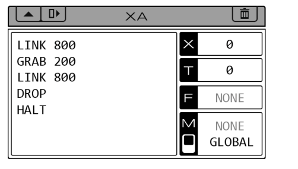
There are different types of registers. Some just store values, so when you read them they'll give you the value of whatever you last wrote to them (these are the X and T registers). Other registers are actually interfaces to more advanced features, like reading or writing files (the F register) or communicating with other EXAs (the M register). Don't worry about using all the registers right away. You'll learn how to use the different types of registers in the tutorials.
Page 6
Hosts, Links, Files, and Hardware Registers
Here are some of the other things you're going to see once you start exploring networks with your EXAs:
- Hosts
A host is a representation of a computer in a network. An EXA can only exist inside a host. When you create them they'll be in your host, but when you run them they can upload into your target host and execute there.
Because of system performance and memory limitations, all hosts have a limit on the number of EXAs that they can contain at once. In EXODUS this is represented by the number of free grid spaces inside the host. Each EXA occupies one grid space.
![An isometric network map spread across both pages, with callout lines to the four terms. Four hosts are chained left to right. HOME, a large host with a 3 by 3 grid of spaces, holds one EXA labelled XA. A link joins HOME to a second, unlabelled 2 by 2 host (circled as the HOSTS example); the link ID is 800 at the HOME end and -1 at the far end. From that host a link with ID 800 on its side and -1 on the far side leads to HOST-B, a 2 by 2 host holding a file labelled 200 (circled as the FILES example). From HOST-B a link with ID 800 on its side and -1 on the far side (circled as the LINKS example) leads to HOST-C, a 2 by 2 host containing a hardware register labelled](images/twn-1-fig07.png)
- Files
Files store sequences of values, both numbers and keywords. They're a little like EXAs since they exist in hosts and take up space, but they have no code or behaviors of their own. Their only purpose is to store values.
To work with files you'll need to use EXAs. EXAs can create and delete files, write to them and read from them, and move them around by grabbing and dropping them. Like links, each file has a numerical ID that lets you reference it from your code.
Page 7
- Links
Links connect hosts to each other, and are what EXAs use to travel between hosts. Links have a numerical ID at each end which lets you reference them in your code. Most links can be traveled in both directions, but some only go one way, and some can't be used at all.
- Hardware Registers
Some hosts contain special hardware registers. These registers are associated with external hardware that might be connected to the host computer. It totally varies with the system, so these registers are sometimes read-only or write-only, while other times you can do both. These registers can involve numbers or keywords. The names for these registers are a pound sign followed by four characters, like #POWR or #ENAB. You can use these names directly in your code.
That was a lot of info, so it's OK if you didn't get it all in one go. The next section contains tutorials where you can get hands-on with this system and start learning it for real.
Ghast Walks U Thru It
Page 8
I truly believe anyone can learn EXA programming. That's why I've set up a network with some tutorials you can try. Give it a shot even if you think you're not a programmer. You might surprise yourself.
Tutorial 1: The Basics
In this first tutorial your goal is to move a specific file with the ID 200 from the host named "inbox" to the host named "outbox." You're going to move it through the link with the ID 800.
Launch EXODUS and connect to the tutorial network. A new blank solution will automatically be created for you. (A "solution" is just a collection of EXAs that begin to execute when you press the run button.)
You'll see an empty EXA with a blank code window on the left side of the screen. Type these five lines of code into the EXA:
EXA XA
LINK 800 ; Traverse link 800 to enter the network GRAB 200 ; Grab file 200 LINK 800 ; Traverse link 800 from "inbox" to "outbox" DROP ; Drop the held file HALT ; Terminate the EXA
Press the step button to step through the program one instruction at a time. When you get bored you can press the run button to watch it run on its own.
Once you've verified the program is doing what you want, you can hit the fast-forward button to let your program run until it's finished. Congratulations, you just programmed your first EXA.
Page 9
Tutorial 2: Reading and Writing Files
OK. The next task is a lot like the first one except you'll need to read and write the file instead of just moving it. Read the requirements in EXODUS for a full explanation. Do that now.
To read or write the file held by an EXA, we have to use the F register. We'll also be using the X register to store the intermediate values as we work through the operations. Type the following code into your default empty EXA:
EXA XA
LINK 800 ; Traverse link 800 to enter the network GRAB 200 ; Grab file 200 COPY F X ; Read from F and write the value to X ADDI X F X ; Calculate X + F and write the result to X MULI X F X ; Calculate X × F and write the result to X SUBI X F X ; Calculate X - F and write the result to X COPY X F ; Read from X and write the value to F LINK 800 ; Traverse link 800 from "inbox" to "outbox" DROP ; Drop the held file HALT ; Terminate the EXA
As you step through the program and execute the GRAB instruction, notice how the window for file 200 shows up beneath the window for the EXA now holding it.
Also look for the "file cursor" in the file window, highlighting the first value in the file. When an EXA reads from the F register it'll read the value pointed at by the file cursor. Likewise, writing to the F register replaces the value pointed at by the file cursor. If the file cursor is at the end of the file it will append the new value instead of replacing an existing one.
One more thing. Reading or writing the F register automatically moves the file cursor to the next value in the file. Sometimes that's convenient. Sometimes it isn't.
Page 10
Tutorial 3: Communication Between EXAs
This next tutorial involves a file that can only be accessed through a one-way link. The EXA that goes to grab the file will be trapped, so you'll need to create two EXAs and have them communicate with each other.
I'll let you figure out the code for this one on your own, but here are some hints:
- You can create a new file with the MAKE instruction. The file it creates will be empty by default, and it will be automatically held by the EXA that created it.
- An EXA can delete the file it's holding with the WIPE instruction.
- Two EXAs can communicate with each other using the M register. If one EXA writes a value to the M register and another EXA reads from the M register, the value gets transmitted from the writer to the reader.
- If an EXA is reading the M register while no one is writing to it, or vice versa, it'll wait until another EXA picks up the other end of the communication. You don't need to time it perfectly.
- There's a toggle switch in the EXODUS user interface that lets you set the M register to global or local operation. In global mode, two EXAs can communicate anywhere in the network as long as there's a path of links connecting them. In local mode, two EXAs can only communicate if they're in the same host. Finally, an EXA in global mode can't communicate with an EXA in local mode, even if they are in the same host.
Page 11
Tutorial 4: Loops and Conditionals
Your final task is to create a file that contains a sequence of numbers. To do this, you're going to want to use something called a loop, which is where you repeatedly run a few lines of code until a stopping condition is met. Here are some hints:
- You can compare registers and/or values with the TEST instruction, like testing if X equals 38 (TEST X = 38). If the test is true, the T register is set to 1. If the test is false, the T register is set to 0.
- On their own TEST instructions aren't that useful, but if you combine them with conditional jump instructions (TJMP and FJMP) you can jump to different parts of the program depending on the result of the test. TJMP (jump if true) works when the T register is set to 1. FJMP (jump if false) works when the T register is set to 0. See the connection? You'll need to specify the jump target with a MARK instruction somewhere else in your program.
- Here's an example of a loop. Say you wanted to write the value 9999 to a file 10 times. You could do it like this, which keeps track of the number of times it's gone through the loop in the X register:
EXA XA
COPY 0 X ; Reset the X register to 0 MARK LOOP ; Define a label called LOOP COPY 9999 F ; Write 9999 to the held file ADDI X 1 X ; Increment X by 1 TEST X = 10 ; Test if X equals 10 and store the result in T FJMP LOOP ; Jump to LOOP if X does not yet equal 10
- When the TJMP and FJMP instructions look at the value in T, they don't care if that value was put there by a TEST instruction or if you put the value there yourself. You can actually store whatever data you want in the T register, as long as you're okay with it being wiped next time you execute a TEST instruction.
Alright, you're through the tutorials now. Congratulations. Consider yourself a real EXA programmer. There's always more to learn, but the basics are all there.
Runtime Errors and How to Exploit Them
Page 12
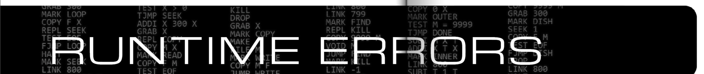
Sometimes EXAs try to do something that they're not allowed to do. When this happens, that EXA is automatically terminated by the host. It's functionally the same as if it ran a HALT instruction. Although most errors are boring and not useful, there are some can be used to your advantage.
Let's start with some of the boring ones:
- Divide by zero
You can't divide by zero on a computer. Some kind of math thing. Don't worry too much about understanding why. Just don't do it.
- Math with keywords
You can't perform operations like addition, subtraction, multiplication, etc. with keywords. Math is restricted to numerical values.
- Invalid F register access
If your EXA reads or writes the F register when it's not holding a file, it'll error out and die. Don't forget to pick up the file first.
- Invalid hardware register access
Similar to the last one. Make sure you're in the same host as the hardware register you want to access before you try to read or write it.
You'll probably see plenty of those errors as you code and fix them as you go. But let's talk about the more interesting type of error now.
Page 13
Sometimes you don't know all the details of the host you're working with. Links can change, files can disappear. There are some things you can only learn about your operating environment by attempting to execute code and potentially failing. It might strike you as messy, but it's not like you're working at some big software company where you'll be frowned on for that kind of messiness (or if you are, I'm sorry, maybe think about changing your life around). The only thing that counts here is getting the job done.
...don't be afraid of letting your EXAs error out, crash, die...
Here are some that are more exploitable:
- Invalid file access
Say you were looking for a specific file. The EXA that tries it will terminate, but now you know the file isn't there.
- Invalid link traversal
Say you were looking for a specific link. The EXA that tries it will terminate, but now you know the link isn't there... sensing a pattern?
Seriously, don't be afraid of letting your EXAs error out, crash, die, whatever you want to call it. They might look cute to you but remember their purpose in life is to spawn, compute, and die repeatedly. You can take advantage of that in your programs.
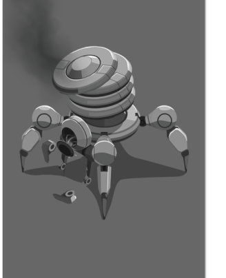
Axiom EXA Language Reference Guide
Page 14
The EXA virtual machine (EXA-VM) allows many execution agents (EXAs) to execute in a shared network of host computers. Within a network, EXAs can be dynamically created, destroyed, and transferred from one host to another. The EXA-VM enables all EXAs to run independently and simultaneously, even when multiple EXAs are located within the same host.
An EXA's program consists of a series of instructions. Each instruction requires zero or more operands. The operands required by each instruction are specified using short abbreviations:
| Abbreviation | Meaning |
|---|---|
| R | A register |
| R/N | A register, or a number between -9999 and 9999 |
| L | A label defined by a MARK pseudo-instruction |
Registers
X
The X register is a general-purpose storage register and can store a number or a keyword.
T
The T register is a general-purpose storage register and can store a number or a keyword. It is also the destination for TEST instructions, and is the criterion for conditional jumps (TJMP and FJMP).
F
The F register allows an EXA to read and write the contents of a held file. When an EXA grabs a file, its "file cursor" will be set to the first value in the file. Reading from the F register will read this value; writing to the F register will overwrite this value. After reading or writing the F register, the file cursor will automatically advance. Writing to the end of the file will append a new value instead of overwriting.
M
The M register controls an EXA's message-passing functionality. When an EXA writes to the M register the value will be stored in that EXA's outgoing message slot until another EXA reads from the M register and receives the previously written value. Both numbers and keywords can be transferred in this way.
If an EXA writes to the M register, it will pause execution until that value is read by another EXA. If an EXA reads from the M register, it will pause execution until a value is available to be read. If two or more EXAs attempt to read from another EXA at the same time (or vice versa), one will succeed but which one succeeds will be unpredictable.
By default, an EXA can communicate with any other EXA in the same network. This can be restricted to EXAs in the same host by toggling the global / local setting in the EXODUS interface, or by executing a MODE instruction. An EXA in global mode cannot communicate with an EXA in local mode, even if they are in the same host.
Page 15
Hardware Registers
Some hosts running the EXA-VM may provide access to connected hardware through the use of hardware registers. Valid names for hardware registers are a pound sign ("#") followed by four characters, such as #POWR or #ENAB. Depending on the host's configuration, hardware registers may be readable and writable, only readable, or only writable.
Instructions
Manipulating Values
COPY R/N R
Copy the value of the first operand into the second operand.
ADDI R/N R/N R
Aliases: SUBI, MULI, DIVI, MODI
Add the value of the first operand to the value of the second operand and store the result in the third operand.
The same syntax is used for the SUBI (subtraction), MULI (multiplication), DIVI (division), and MODI (modulo) instructions.
SWIZ R/N R/N R
Swizzle the value of the first operand using the value of the second operand as a swizzle mask and store the result in the third operand. The swizzle instruction can be used to rearrange and/or extract the digits in a number as shown:
| Input | Mask | Result |
|---|---|---|
| 6789 | 4321 | 6789 |
| 6789 | 1234 | 9876 |
| 6789 | 3333 | 7777 |
| 6789 | 1211 | 9899 |
| 6789 | -4321 | -6789 |
| -6789 | -4321 | 6789 |
| 6789 | 2000 | 8000 |
| 6789 | 0001 | 0009 |
Branching
MARK L
Mark this line with the specified label. MARK is a pseudo-instruction and is not executed.
JUMP L
Jump to the specified label.
TJMP L
Jump to the specified label if the T register equals 1 (or any value other than 0). This corresponds to a TEST result that was true.
FJMP L
Jump to the specified label if the T register equals 0. This corresponds to a TEST result that was false.
Page 16
Testing Values
TEST R/N = R/N
Compare the value of the first operand to the value of the second operand. If they are equal, set the T register to 1, otherwise set the T register to 0. The same syntax is used for the < (less than) and > (greater than) tests.
| Operand types | TEST R/N = R/N | TEST R/N < R/N | TEST R/N > R/N |
|---|---|---|---|
| Number / Number | Test equality | Test numerical order | Test numerical order |
| Keyword / Keyword | Test equality | Test alphabetical order | Test alphabetical order |
| Number / Keyword | Always false | Always false | Always false |
Lifecycle
REPL L
Create a copy of this EXA and jump to the specified label in the copy.
If an EXA is holding a file when executing a REPL instruction the file will not be copied and will remain held by the original EXA.
HALT
Terminate this EXA. If it was holding a file, the file is dropped.
KILL
Terminate another EXA in the same host as this EXA, prioritizing EXAs created by the same user. If there is more than one possible target, the target will be chosen in an unpredictable manner.
Movement
LINK R/N
Traverse the link with the specified ID.
HOST R
Copy the name of the current host into the specified register.
Communication
MODE
Toggle the M register between global and local mode.
VOID M
Read and discard a value from the M register.
TEST MRD
If this EXA could read from another EXA without pausing, set the T register to 1, otherwise set the T register to 0.
Page 17
File Manipulation
MAKE
Create and grab a new file.
GRAB R/N
Grab the file with the specified ID.
FILE R
Copy the ID of the held file into the specified register.
SEEK R/N
Move the file cursor forward (positive) or backward (negative) by the specified number of values.
If SEEK would move the file cursor past the beginning or end of the file it will instead be clamped. Thus, you can use values of -9999 or 9999 to reliably move to the beginning or end of the file.
VOID F
Remove the value highlighted by the file cursor from the currently held file.
DROP
Drop the currently held file.
WIPE
Delete the currently held file.
TEST EOF
If the file pointer is currently at the end of the held file, set the T register to 1, otherwise set the T register to 0.
Miscellaneous
NOTE
Any text following the NOTE pseudo-instruction will be discarded when compiling, allowing it to be used to write "comments" to document the code. Any text following a semicolon, anywhere on a line, will also be discarded.
NOOP
Do nothing for one cycle.
RAND R/N R/N R
Generate a random number between the first and second operands (inclusive) and store the result in the third operand.
Debugging the Phage
Page 18
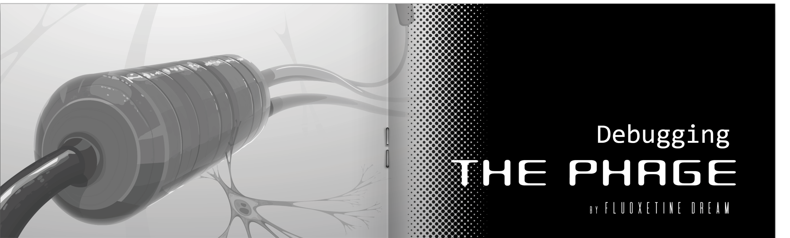
A mystery disease known colloquially as "the phage" that slowly turns the human body into computer parts sounds like the realm of science fiction or conspiracy theorists, but in this case it's sadly all too real. The phage is known to the medical community as Progressive Neuroplastic Dysfunction (which is outdated and not an accurate name at all), or the lesser-used Wurzner's Syndrome.
At first blush, turning into a computer may sound cool— like becoming a cyborg. Unfortunately, the phage does not turn your body into anything that resembles a working computer. If left unchecked, the phage leaves the body a lifeless amalgamation of purposeless circuitry.
We know that people who use computers frequently are more inclined to get it, with all known incidents occurring in people who use computers for eight hours a day or more. It spreads over the course of six to eighteen months from the extremities (often the hands, but occasionally the feet) toward the body's core, slowly replacing the body's cells with connected structures of a plastic-like substance containing semi-conductive sub-structures.
Currently the best option for treating the phage is to cut away the affected tissue as fast as it appears, which is hardly an ideal solution. Several other treatments are in development. One off-label oral medication seems to be effective at slowing its spread, but is prohibitively expensive for the majority of would-be patients.
Page 19
Beyond this, understanding of the phage is still poor, so speculation has rushed to fill the gap. Claims that the phage is an escaped experiment from a secret government lab researching human-computer interfaces are unverifiable, as are any of the frankly silly ideas around a kind of mystical "computer rapture" where carbon and silicon life forms will join together to form a new higher form of consciousness.
One thing we can empirically test is the idea that the phage was indeed originally designed as a way to facilitate direct human-computer interfaces. As a graduate student at a respected medical school, I was able to use the lab to do a little "off the books" experiments of my own with an acquaintance afflicted with the disease. For obvious reasons we are both going to remain anonymous.
Interfacing with phage nodes as EXA hosts
Perhaps the most interesting thing about phage-infected tissue is that it does in fact seem to provide interfaces that can be connected to with off-the-shelf hardware debuggers. I used a Mitsuzen HDI-10, typically used to debug EXA-based embedded systems, for the experiment described here.
Page 20
By replacing the HDI-10's probes with conductive, high-precision tweezers, I was able to connect to the phage node cluster shown in the microscope image below. Each phage node was enumerated as a small host, with corresponding links between connected phage nodes. In the absence of proper link IDs, the firmware for the HDI-10 appears to auto-enumerate its own.
![Two panels side by side. Left: a circular microscope view of tissue with three labelled callouts: NEW NODE (a small capsule-shaped growth on a thin fibre), PHAGE NODE (a large segmented cylinder threaded on a dark cable) and NEURON (a branching nerve cell next to the phage node). A scale bar reads 200 μm. Right: the same cluster as seen through the debugger, drawn as an in-game EXA network. Several small square hosts (some cut off at the panel edges) are connected in a zigzag by links. Three of the hosts each carry a hardware register labelled #NERV, with values -67 (top host), -70 (middle-left host) and -73 (lower-right host). The auto-enumerated link IDs shown at the link ends are small numbers: 1 and -1 on the links between hosts, and 3 and -3 on others. The lower-right host carries the faint label XN471158.](images/twn-1-fig11.png)
It's known that phage nodes have an affinity for nerve (and nerve-like) cells, disrupting neural behavior and causing the degenerative symptoms associated with the disease. Further supporting the idea that the phage was designed to support human-computer interactions, phage nodes connected to nerve cells present hardware registers in their corresponding hosts that allow the electric potential of the attached nerve cells to be measured, excited, and suppressed. Units appear to be in millivolts; for the uninformed, nerves have a resting potential of around -70 mV, can spike up to around 50 mV when excited, and can fall as low as -120 mV when suppressed.
Injecting EXAs into phage nodes?
Given this initial work, it seems like it should be possible to inject EXAs into phage nodes in a human host and program them to repair neural processes that have been disrupted by the growth of those very same phage nodes. I would like to try this next, but it is an obviously risky procedure and is frowned upon in the medical community (hence the need for secrecy here). It's unfortunate that a one-off, custom therapy like this would be unlikely to get regulatory approval. I'm going to be making an attempt to perform this and will report back with more information.
Sunny's Surplus
Page 21
SURPLUS
/ˈsərpləs/
noun
- an amount of something left over when requirements have been met; an excess of production or supply over demand.
PRICES SO LOW THEY'LL KNOCK YOUR MIRRORSHADES OFF!
| PAGERS | $30 |
|---|---|
| DIGICAMS | $30 |
| DATAPHONES | $75 |
| DESKTOP HYDRAS | $150 |
| SOFTMODEMS | $15 |
| HARDWARE MODEMS | $50 |
PERSONAL COMPUTERS FROM ONLY $300!
WIDE RANGE OF MEMORY EXPANSION MODULES FROM $50!
Monthly Specials:
| 15" MONITORS (MILITARY SURPLUS) | $50 |
|---|---|
| BACKUP TAPE / TAPE DRIVE | $5 / $40 |
| IMAGEWORKS FRAMEGRABBER | $20 |
| VECTOR COPROCESSOR (TEC-PC) | $40 |
![Black-and-white comic-style line drawings of used electronics scattered around the ad. Top left, a bench power supply or soldering station with a coiled cord. Top right, a boxy speaker or oscilloscope-like unit with a star on its round screen. Left, a chunky CRT computer monitor whose screen shows a cartoon face speaking the "PRICES SO LOW..." speech bubble. Bottom, a home computer with a keyboard, a floppy drive, a round trackball puck, an expansion cartridge, a disk drive with a loose hard-disk platter, and a second boxy monitor with a stylised face that speaks the "PERSONAL COMPUTERS..." bubble.](images/twn-1-fig12.png)
Highway Signs
Page 22
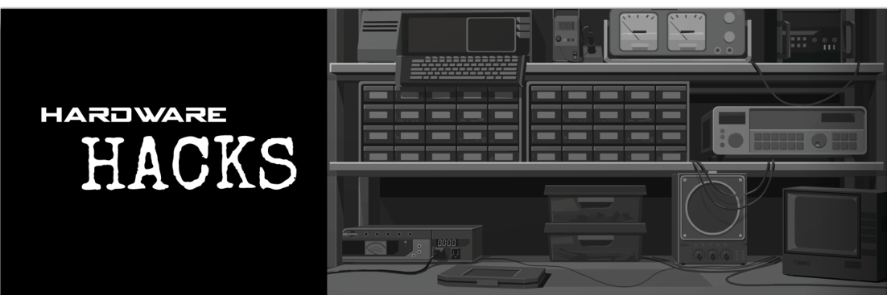
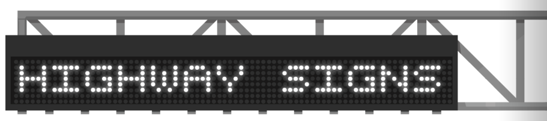
I know I'm not the only one with fond memories of pranking electronic highway signs. The locks on the keypads were easy to pick, and a lot of times they weren't even locked at all, so it used to be really easy to change their messages from your usual, humdrum CONSTRUCTION AHEAD or LEFT LANE CLOSED to more fun things like NO SPEED LIMIT or HAIL SATAN.
Alas, for a long time people thought it wouldn't be possible anymore, thanks to local transportation agencies who got wise to our wholesome activity and have been replacing their old highway signs with an expensive new network-based version that's only programmable from central headquarters. If the only way to change the sign is remotely, surely the kids couldn't tamper with them anymore. Right?
Kids, you know how this story goes: These new remote highway signs are a little trickier to access, but still simple to change to whatever you want. All you need is the information here and the right phone number and you too can bring a smile to a corporate wage slave who's stuck in traffic yet again.
Page 23
Changing the Message
Once you're in, these signs accept messages in the form of a series of three-number packets written to #DATA. The first number is the row (starting at 0), the second is the column (also starting at 0), and the third corresponds to the character you want to display. And then there are usually a few more registers that are fun to mess with. Most I've seen have one called #CLRS which clears the sign if you write anything to it. Others signs have effects you can activate like flashing or inverted text.
Here's a common character table:
| Value | Character |
|---|---|
| 0 | (space) |
| 1 | A |
| 2 | B |
| 3 | C |
| 4 | D |
| 5 | E |
| 6 | F |
| 7 | G |
| 8 | H |
| 9 | I |
| 10 | J |
| 11 | K |
| 12 | L |
| 13 | M |
| 14 | N |
| 15 | O |
| 16 | P |
| 17 | Q |
| 18 | R |
| 19 | S |
| 20 | T |
| 21 | U |
| 22 | V |
| 23 | W |
| 24 | X |
| 25 | Y |
| 26 | Z |
| 27 | 0 |
| 28 | 1 |
| 29 | 2 |
| 30 | 3 |
| 31 | 4 |
| 32 | 5 |
| 33 | 6 |
| 34 | 7 |
| 35 | 8 |
| 36 | 9 |
| 37 | . |
| 38 | ? |
| 39 | ! |
Proof of Concept
Below is a picture documenting a highway sign that "someone" may have hacked into. It goes without saying that whoever committed this heinous act should be ashamed of themselves and has nothing to do with me...
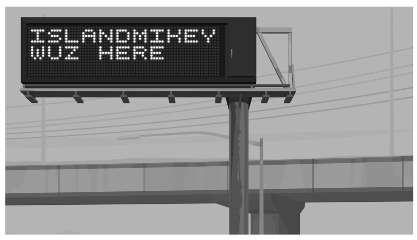
DigiCash
Page 24
These days corporations large and small are rushing to turn all of their transactions into DIGITAL transactions. Why? It's better, that's why! Don't question it, just go along with the hype, man!! Of course, in their rush to make everything digital they've built everything fast and sloppy, leaving their systems almost laughably insecure. In this article I'll take a look at just one example, the DigiCash POS (which stands for "point of sale"... any similarities to another acronym that could indicate this product's quality is purely coincidental).
...in their rush to make everything digital they've built everything fast and sloppy, leaving their systems almost laughably insecure...
DigiCash is a popular option for payment processing, especially for smaller businesses. It's turned up almost everywhere I've looked... convenience stores, gas stations, laundromats, even tanning beds. And wouldn't you know, all systems by DigiCash have a technical architecture in common!
Page 25
- CUSTOMER DATABASE
The customer database (usually file 200) stores a list of customers with three values for each customer: The customer ID, dollars owed, and cents owed.
- TRANSACTION LOG
The transaction log (usually, you guessed it, file 201) stores a list of transactions with four values for each transaction: The date, the customer ID, the dollars paid, and the cents paid.
You'll also probably see a real-time clock module, which is is typically connected to the primary host. This is used for time-stamping the transactions. Sometimes there's a small amount of customization for the client, either something as minor as a custom network map graphic, or something more significant. For example a certain laundromat down the street from my apartment has integrated it with their washers and dryers.
![In-game network view of a DigiCash system branded MISSION STREET LAUNDROMAT (logo with soap bubbles, bottom right). The EXA XA sits in the player's host KRASHPAD, which connects by link 800 to the primary host (link -1 on that side). The primary host holds file 200 and file 201. From the primary host, link 801 leads to a host labelled CLOCK (link -1 back), which has hardware registers #TIME (value shown truncated as 06...) and #DATE (value truncated as 10...). Link 800 from the primary host leads to a hub host (-1 back). From the hub, links go to six machine hosts, each with a -1 link back: 805 to WASHER1 (#WASH = 33), 804 to WASHER2 (#WASH = 19), 803 to WASHER3 (#WASH = 27), 802 to DRYER3 (#DRYR = 0), 801 to DRYER2 (#DRYR = 32) and 800 to DRYER1 (#DRYR = 40).](images/twn-1-fig16.png)
Either way the main architecture is always the same. Given this information, it seems like it would theoretically be pretty straightforward for a bad actor to add or remove transactions or balances, provided they got access to one of these systems...
Accessing Data in Legacy Storage Systems
Page 26
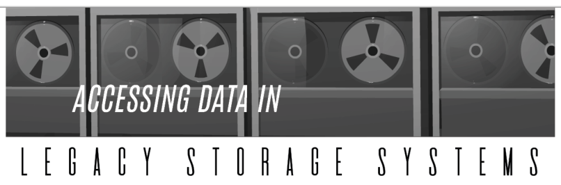
The fast pace of computer technology means a lot of stuff gets left behind, and the rapid shift to EXA-based computing has left a lot of interesting data on older storage media. Accessing storage from before the EXA era can be awkward, but it can also be rewarding. You never know what you'll find! Here are a couple older storage formats and how you can go about reading from them:
Tape storage systems
Tape storage systems were often used for long-term storage or backup. An EXA-accessible tape storage system typically consists of one host per tape unit, with each unit's tape mounted as a file that can be read and written.
Each tape contains zero or more backup entries. The data for these entries starts at the beginning of the tape and is concatenated sequentially, making it impossible to tell which data belongs to which backup entry. Boo! It's gonna take some work to retrieve that data.
Metadata for the entries is stored at the end of the file in three-value triplets. The first value is the entry's name, the second value is the offset in the data stream where the entry's data starts (0 = beginning), and the third value is the length of the entry.
For example, to get the data for an entry with metadata "SECRET, 3, 4", you'd go to the beginning of the file, skip the first three values, and then read off the next four values (in order).
Page 27
Hard drive arrays
Arrays of hard drives are still used today for certain applications. Because they store a file's data across multiple drives they're faster to read and write, but also more complex to access than a single drive. Within the array, each drive is typically mapped to its own host and contains up to 10 files, starting with file ID 200 up to file ID 209. Each file will contain 100 values divided into 10 chunks of 10 values each.
The first file (200) in the first drive should contain a table of all backup entries contained in the drive array. Each entry consists of the entry's name followed by the addresses of the chunks storing that entry's data. A chunk address is a number between 100 and 999 that points to a chunk located somewhere in the drive array. The first digit indicates the drive that contains the chunk (1-9), the second digit indicates the file that contains the chunk (0-9, mapping to files 200-209), and the final digit indicates the location of the chunk within the target file (0-9, mapping to offsets 0 through 90).
For example, to retrieve chunk 527, you'd access drive 5, grab file 202, seek to offset 70, and read the next 10 values (the size of a chunk). Hey, not so complex after all!
WorkHouse
Page 28
If you've ever needed some quick cash to make ends meet you've probably considered WorkHouse. The commercials make it sound like a great option for extra money, but in practice the tasks are about as fun as watching paint dry. Imagine the joy of searching for duplicate entries in a giant database by hand, or looking at grainy pictures of pork cutlets trying to decide if they're still good, or typing up receipts for some rich executive's fancy dinners on the company dime.
Seeing the kind of good honest labor that WorkHouse offers might make you less inclined to do the actual tasks, and more inclined to take a peek behind the curtain to see how this particular sausage is made. Luckily, if you can connect to the server, the operation quickly unravels in all its mechanical glory.
...if you can connect to the server, the operation quickly unravels in all its mechanical glory...
Page 29
- USER DATABASE
First you'll see a "users" host, which contains a file for each account. This file has the user's name, date of birth, and a log of how much money that user earned each day. WorkHouse doesn't want people defrauding them, go figure, so they presumably use this as part of a tracking system to make sure their human cattle— whoops, I mean independent contractors— are behaving as intended.
- JOB DATABASE
Then there's a "jobs" host, which contains information about the currently active jobs that can be offered to users, along with descriptions of what these jobs entail.
![In-game network view of the WorkHouse network. The background art in the top left shows the Workhouse logo (a house shape) with running stick figures and the slogans "Easy work." and "Easy money." The EXA XA sits in the player's host SEALAB, linked by 800 to a host SECURE (link -1 back) which holds a locked file 199. From SECURE, link 799 leads to the USERS host (-1 back), which holds seven user files: 206, 230, 249, 252, 262, 268 and 290. From USERS, link 800 leads to a long GATEWAY host (-1 back). From GATEWAY, link 801 leads to the JOBS host (-1 back), which holds five files: 210, 241, 259, 273 and 291. Two further links from GATEWAY lead to two small hosts, PUB1032 and PUB6828 (the second label is faint), each containing a stationary robot; their link IDs are not shown.](images/twn-1-fig20.png)
- TASK DATABASE
But where are the tasks stored?, I hear you ask. Good question. The tasks are actually served from the partner networks of companies requesting work, and are sent to workers directly. Presumably this is for simplicity... or perhaps it's so WorkHouse has plausible deniability of any sketchy tasks that come through the system.
Anyway, it's a good thing everyone loves WorkHouse, the company that helps uplift people every day by paying them tiny amounts of money for doing repetitive, soul-sucking tasks. It sure would be terrible if something happened to them!
Equity First Bank
Page 30
Hacking the BANK? Woah, what is this, some kind of crime manual? Of course not... we all follow the law here, thank you very much! So don't think you're gonna read this article, connect to Equity First and suddenly add $100,000 to your account. You're all smart enough to know a transaction that large will set the alarm bells ringing and has a high chance of being caught by a fraud-detection program. Or a computer security expert.
Now that I've set your expectations, let's dive in. The first thing to know is that even though Equity First is the biggest of the big banks that everyone loves to hate, there's no reason for us to be intimidated. I was able to take a peek inside their network and what I found was that their internal server structures aren't so different from any other bank. In fact, they're quite simple.
Equity First is the biggest of the big banks that everyone loves to hate...
Page 31
- ACCOUNT FILES
Accounts are stored in individual files with one per account. Every account file starts with four values. It goes like this: The account number, the account name, a number indicating what type of account it is (so far I've discovered that 2 indicates a checking account and 7 indicates a loan... the other numbers must be for other types of accounts), and then what always appears to be a *, whatever that's for. It could be a placeholder for future use.
- TRANSACTIONS
After that, accounts are filled with sets of four values representing transactions: The account that the transaction is transferring from or to, either CREDIT or DEBIT depending on if the money is going in or out of the account, and the dollars and cents for the amount of the transaction. Equity First checks automatically to ensure every credit transaction has a corresponding debit transaction to prevent obvious attempts to cook the books.
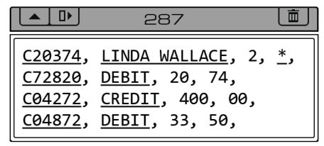
C20374, LINDA WALLACE, 2, *, C72820, DEBIT, 20, 74, C04272, CREDIT, 400, 00, C04872, DEBIT, 33, 50,
Transfer $33.50 from C20374 (LINDA WALLACE) to C04872 (FASHION ALLEY)
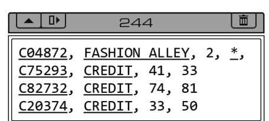
C04872, FASHION ALLEY, 2, *, C75293, CREDIT, 41, 33 C82732, CREDIT, 74, 81 C20374, CREDIT, 33, 50
- ATMS
At the back of the network you'll see a number of ATMs connected over dial-up connections. Equity First ATMs only dispense 20 dollar bills, so the #CASH register tells you how many bills are remaining, as opposed to how much money is remaining. If you write 20 to the #DISP register it will attempt to dispense a bill, but if the ATM is out of bills, it'll send a failure message that alerts the bank. So be careful!
Trash World Kitchen
Page 32
You're a hacker; you live in the network. Physical reality doesn't matter. You're a mental construct, a presence, a soul without a container...
Well, maybe that's your ideal. But right now I have some bad news: You're still in a physical body! And that means you have to feed it, take care of it, etc. You know the drill. After a while that gets boring and you don't really think about it anymore.
Maybe your experience with this aspect of living begins and ends with getting some snacks and soda from Last Stop. If it does, don't worry. This column isn't going to be about cooking that requires tons of money, gourmet ingredients, or pro kitchen equipment. That stuff is boring. Plus it just doesn't feel right given the world today. We need a school of food preparation that results in tasty food, but works fully within this post-... well, post-whatever society it is we're living in now.
We're going to start simple. Presenting...
Dumpster Donuts
Yes, you read that right. You are going to liberate the perfectly good donuts they throw away every day at stores that sell them. Or, if you aren't going to be able to stomach the idea of eating something out of the trash, pick them up when they're marked down for being a day or two old. Either way, these donuts are still fine— probably just a little stale. Here's where the trick comes in: Use the broiler.
Page 33
The what? The broiler! It's a feature of your oven, and here you're gonna learn how to use it. Normally your oven attempts to heat evenly throughout the inside, but putting it in broiler mode turns on an element at the top that radiates a ridiculous amount of heat down at whatever is directly below it. You use it for making things crisp at the top or around the edges, the final touch. It's the step that makes the chicken skin crispy, the cheese melted and bubbly, the lightly singed edges of a salmon steak. COOKING ROCKS!
The reason this works is that the broiler toasts the outside of the donut (which makes them taste better) while caramelizing any icing or glaze on top (which makes it crispy and extra-delicious). You can also do this in a toaster oven, although it probably won't caramelize the icing like a broiler will. Do NOT use a push-down toaster... the icing will drip down and burn and fill your house with smoke. And/or fire.
Now you have amazing warm donuts for absolutely free (or cheap)! There's a ton of great dishes you can finish off in the broiler but we'll get to all that stuff later. For now, enjoy your upgraded donuts.
- Take your dumpster (or discount) donuts
- Microwave them briefly until they're soft inside (~10 seconds for a single donut)
- Put them on a metal tray or sheet of tin foil
- Turn on your oven's broiler mode
- Put them in your oven and adjust the rack so the donuts are about 2" below the broiler
- Keep the oven door open
- Watch, since the broiler works hot and fast
- Take the donuts out after they start to brown but before they burn (~1-2 minutes)
Passing Resemblance
Page 34
When I first learned I was a test tube baby, I imagined rows of fat wide glass vats with fetuses growing inside, arranged in clusters inside a laboratory under dim lighting. Sharon, my mother, explained something about cells and mitochondria as Maria, my young nanny, stroked my damp hair and coaxed it into a hair tie. Sharon leaned over the breakfast bar and drew an amorphous blob on a stray index card.
'This is a cell, the basic unit of all life.'
I was six years old. It was the last year Maria would be in our employ.
What makes someone a mother? Is it to carry a child? Is it the act of birth alone that defines motherhood? Or is it the act of raising and nurturing?
Sharon never needed a man, but not because she was militantly feminist or fiercely independent. It simply never crossed her mind. She didn't need anyone else to create a child.
Sharon had been a promising researcher at the Powell Institute for Science, working in Romania and Ukraine and across the States, but after 15 years of fruitless efforts and broken partnerships, her disdain for the C-level execs pushed her towards something more cynical— management. So, she quickly took to that at the laboratory, climbing up each rung of the corporate ladder, cutting the previous rung as she went.
'Why was she so ruthless?' I asked Ben, a few days before the memorial service. He paused, setting the poor excuse for a coffee I had made on that same breakfast bar. He shrugged.
I missed Maria, how she could braid my hair and sing and play along on her ukelele. Her hair was curly and she had dimples and she tanned easily. Sharon and I had the same paper white skin that blistered at the mere thought of the sun.
Page 35
Maria had held me and rocked me in her lap while we watched old cartoons. She would feed me peanut butter crackers and brush my hair. Hers was so thick and long; it fell below her waist, and she wore it in a tight braid. Was she a mermaid? I asked her at least once. She just smiled and laughed.
'Where is Maria going?'
'Maria is starting her own family.'
A bitterness flashed through me. Then, the mist of confusion came over my eyes.
'Starting her own family?'
'Maria met a nice young man and is getting married.'
'Where's your young man?'
Sharon grinned at me, and placed her hands on my shoulders.
'It's time to start your education.'
Not long after Maria left, Sharon brought home a bright purple all-in-one computer. It was a gift, she said, from the Powell Institute's artificial intelligence division. Sharon beamed and crouched beside me in the closest approximation to a Christmas morning I would ever have as I turned it on. The computer chimed and a swooping wave tumbled and twirled across its reflective screen.
'Hello,' a voice from the device said. 'My name is JODI. What's yours?'
I stared at it, watching our twin reflections in the screen.
'Thanks,' I said.
'Hello Minx,' said JODI.
'There are still some issues, but the AI group is always patching it. It's very promising. I think you'll really enjoy having a virtual... friend.'
Over the next three years, I never corrected JODI and she continued to call me Minx.
Sharon always wanted to do what was best for me, for herself. So, I was carried by another woman. Rosaline.
I first heard her name when eavesdropping on Sharon and Ben. I was infatuated. I traced her name in the air with a flourished cursive letter 'R.' I imagined her face, though I knew it was nothing like mine, nothing like Sharon's.
Page 36
Rosaline. Rosaline. I imagined she was a princess with long auburn hair and green eyes. I imagined she was a runaway with ruddy cheeks and tattoos. She was a poet. She was an astronaut. She was a surgeon. She was a dancer. She was a creator. She was a mother.
'JODI, What does the name Rosaline mean?'
'Rosaline was a minor character in William Shakespeare's Romeo and Juliet. It is a variant of the name Rosalind, meaning soft horse.'
As usual, JODI tempered my exuberant imaginings.
JODI did not turn out to be the premier in-home educational assistant that the Institute had hoped it would be. At the age of nine Sharon introduced me to Priya and Ben, who would become my personal tutors for all subjects relating to science, technology, engineering, and math. There were no other subjects.
Priya and Ben came in a pair three times a week with their portable computers, and even an occasional textbook ('for fundamentals', Priya would insist). Trigonometry and calculus came from Priya, like a fountain of equations and variables. From Ben came biology and chemistry. Priya only let me pass onto physics later, after I had proven my proficiency with mathematics. Together they chaffed and bothered like two magnets. But they taught me about logarithms and algorithms, mechanics and dynamics, mitosis and symbiosis.
By fourteen I had exceeded the requirements to graduate from a private secondary school. For this accomplishment, Priya, Ben, and I crammed into Priya's subcompact electric car and drove to Dairy Queen.
When we returned to the condo, Sharon opened the door and smiled at me. 'Now we can start your real education.'
'What do you mean?'
'You're going to start working at the Powell Institute. With me.'
'With us,' Priya added.
Sharon glanced to Priya, then Ben.
'You have ice cream in your beard.'
And she disappeared into the dark entry hall of the apartment.
TO BE CONTINUED...
Inside Back Cover
Page inside-back
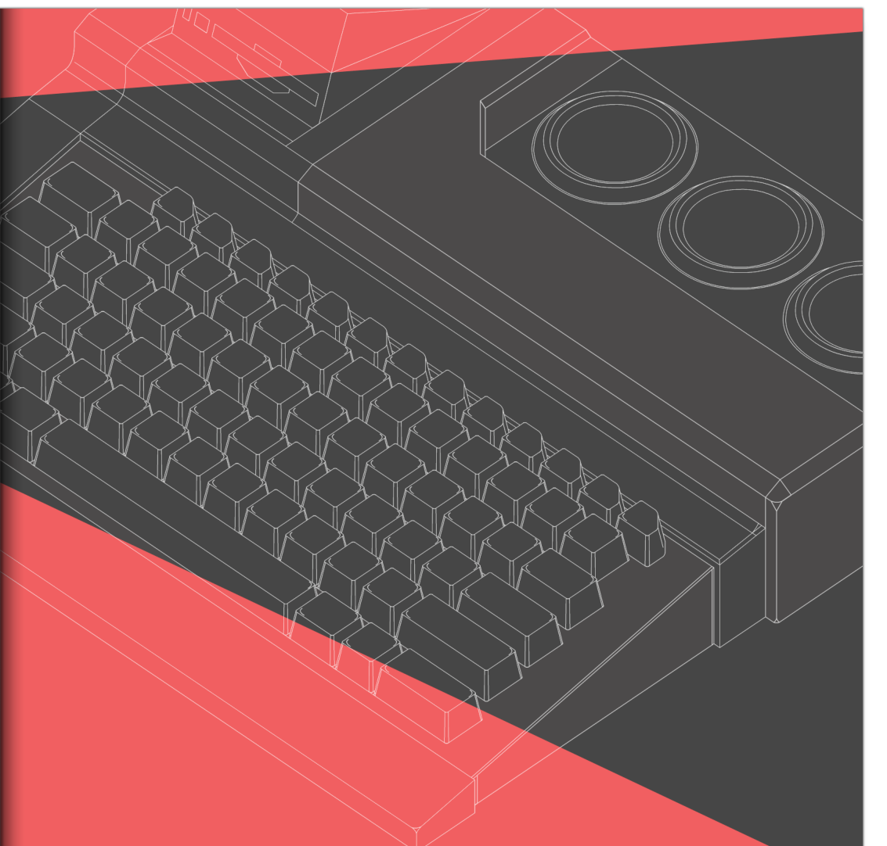
"Computers are just as oppressive as before, but smaller and cheaper and more widespread. Now you can be oppressed by computers in your living room."
– Ted Nelson, Computer Lib
Back Cover
Page back
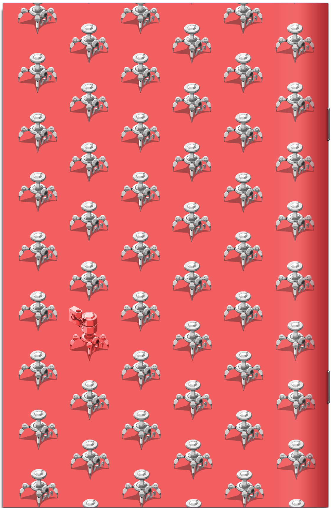